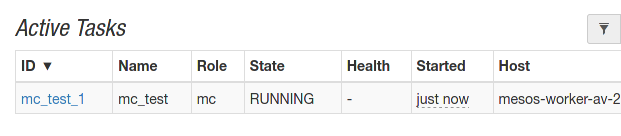
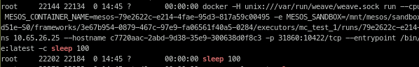

Introduction - mesos-compose, the docker-compose framework for Apache Mesos
Requirements
- Apache Mesos min 1.6.0
- Mesos with SSL and Authentication is optional
- Redis Database
- Docker Compose Spec 3.9
Example
Compose file with all supportet parameters:
version: '3.9'
services:
app:
image: alpine:latest
command: ["sleep", "1000"]
restart: always
volumes:
- "12345test:/tmp"
environment:
- MYSQL_HOST=test
labels:
biz.aventer.mesos_compose.container_type: "DOCKER"
biz.aventer.mesos_compose.contraint_hostname: "worker-1"
biz.aventer.mesos_compose.executor: "./my-custom-executor"
biz.aventer.mesos_compose.executor_uri: "http://localhost/my-custom-executor"
traefik.enable: "true"
traefik.http.routers.test.entrypoints: "web"
traefik.http.routers.test.service: "mc_test_app_80"
traefik.http.routers.test.rule: "HostRegexp(`example.com`, `{subdomain:[a-z]+}.example.com`)"
network_mode: "BRIDGE"
ports:
- "8080:80"
- "9090"
- "8081:81/tcp"
- "8082:82/udp"
network:
- default
deploy:
resources:
limits:
cpus: "0.01"
memory: "50"
networks:
default:
external: true
name: weave
volumes:
12345test:
driver: local
We can also use yaml anchors and more then one service in a compose file:
version: '3.9'
common: &common
image: alpine:latest
restart: always
labels:
biz.aventer.mesos_compose.container_type: "DOCKER"
services:
app1:
<<: *common
command: ["sleep", "1000"]
app2:
<<: *common
command: ["sleep", "2000"]
networks:
default:
external: true
name: weave
volumes:
12345test:
driver: local
Push these compose file to the framework. Every compose file needs to have an own project name.
curl -X PUT http://localhost:10000/api/compose/v0/<PROJECTNAME> --data-binary @docs/example/docker-compose.yml


To scale the service, just execute the same call again. To update a already existing docker-compose project, call:
curl -X UPDATE http://localhost:10000/api/compose/v0/<PROJECTNAME> --data-binary @docs/example/docker-compose.yml
Error Codes
| 0 | No Error | | 1 | Could not save configuration into Redis | | 2 | Unspecified error | | 3 | Reconcile Error |
M3s Labels
biz.aventer.mesos_compose.container_type
Values: docker, mesos (todo)
This label will control, which container engine mesos will choose to execute the container.
biz.aventer.mesos_compose.contraint_hostname
Values:
This label will control, on which node the container will be executed.
biz.aventer.mesos_compose.executor
Values:
With this label it is possible to use a custom executor.
biz.aventer.mesos_compose.executor_uri
Values:
The URL where to fetch the executor. As example: http://localhost:8080/executor